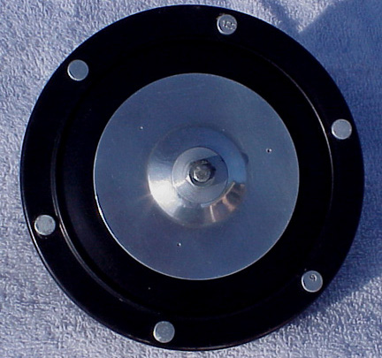
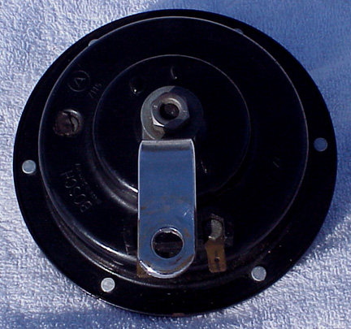

The /5 series came equipped with two different styles of horns. The 1972 model, like the one shown to the right, came with a chrome grill mounted on the horn. Other model years were equipped with a horn as seen below.
 Front and back views of the horn.
Many other horns of all types have been fitted to /5s. Many people mount air-horns on their optional crash bars. In a pinch, one can also acquire a horn from the local automobile junkyard. Even a horn from an old Volvo will work. It looks similar to stock, and is slightly louder.
Chris Bynum's website has links to a couple aftermarket repro horns.